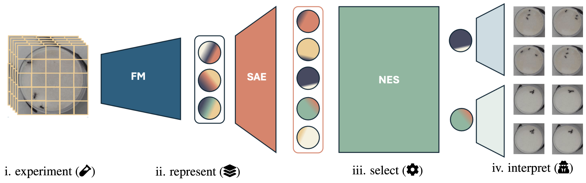
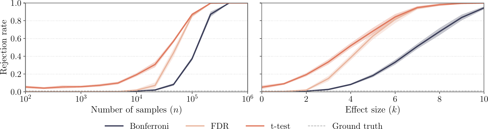
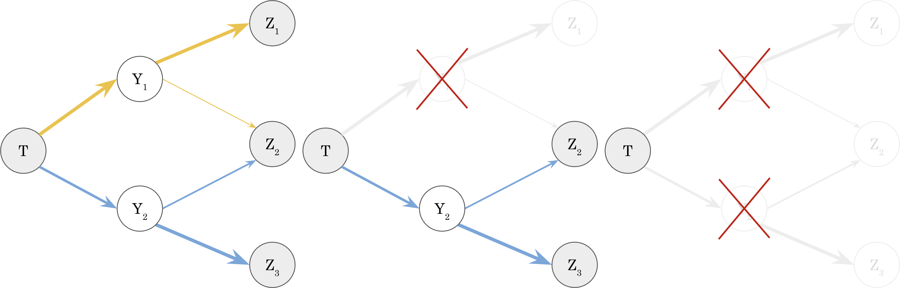
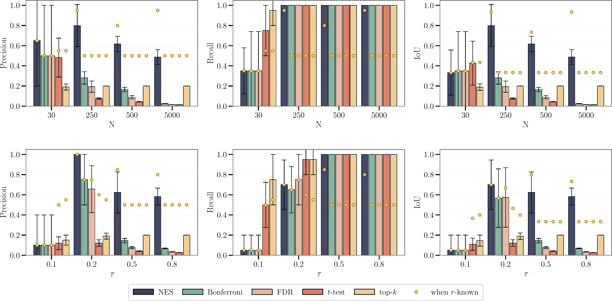
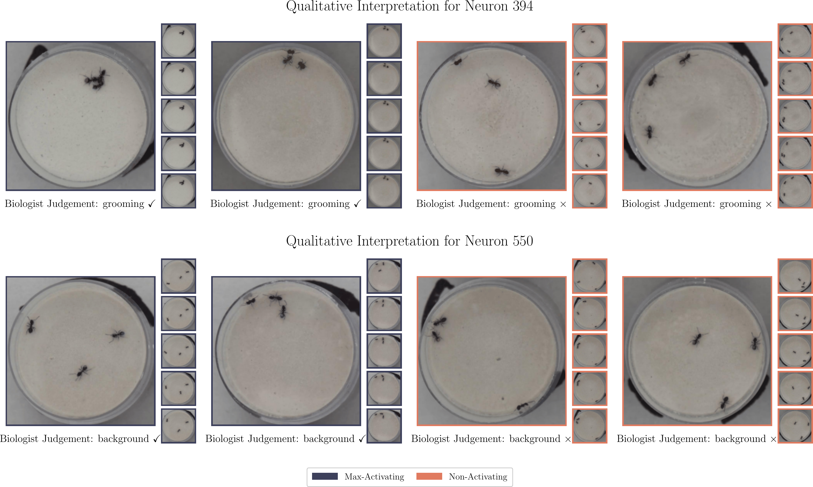

Exploratory Causal Inference in SAEnce
Discovering the unknown effects of a treatment, directly from data, with foundation models and sparse autoencoders
Randomized controlled trials rely on hand-crafted hypotheses, which limits causal effect estimation at scale and risks anchoring on popular yet incomplete questions. This paper proposes to discover the unknown effects of a treatment directly from data: unstructured trial measurements are turned into interpretable representations with a pretrained foundation model and a sparse autoencoder, then scanned for treatment effects. Because such codes are only approximately monosemantic, naive multiple testing collapses — the “paradox of exploratory causal inference.” The authors introduce Neural Effect Search, a recursive stratification procedure that disentangles leaked effects, and demonstrate the first unsupervised causal effect identification on a real-world ecological trial.
The problem: looking before hypothesizing
Randomized controlled trials are a pillar of the empirical sciences, but they are rationalist by design: a scientist first formulates a causal hypothesis, then collects data to falsify it (Popper 2005). In an era of atlas-scale datasets — planetary maps of genomes, pan-cancer sequencing, cells imaged under thousands of perturbations — that workflow becomes a bottleneck. Deciding what to look at a priori biases analysis toward already-studied phenomena, the “Matthew effect” of rich-get-richer science (Merton 1968).
This paper takes the opposite, empiricist stance: discover the unknown effects of a known treatment directly from raw, high-dimensional measurements, and hand the candidate hypotheses back to domain experts to judge.

From measurements to a dictionary of effects
The treatment T \in \{0,1\} is randomized, and the affected outcome Y is latent: it is only observed indirectly inside a high-dimensional measurement X (e.g. a video frame), mixed with other latent causes W. Under randomization the average treatment effect identifies as a difference of means (Rubin 1974), \tau = \mathbb{E}[Y \mid T=1] - \mathbb{E}[Y \mid T=0], and more efficient estimators such as AIPW can lower its variance (Robins et al. 1994). The twist of exploratory causal inference is that the outcome of interest Y is unknown — it must be discovered.
The method passes each measurement x through a pretrained foundation model to obtain a representation h=\phi(x)\in\mathbb{R}^d, assumed sufficient for the outcome information (I(X,Y)=I(\phi(X),Y)). Since individual coordinates of h rarely align with human-readable concepts (Bricken et al. 2023), a sparse autoencoder (SAE) reparameterizes h into a sparse, overcomplete code z that reconstructs h linearly (Huben et al. 2024): z = g(\mathbf{E}^\top h + b_e), \qquad \hat{h} = \mathbf{D}z + b_d. Each coordinate z_j behaves like a candidate “measurement channel” for a simple attribute, which a scientist can inspect after the fact.
The paradox of exploratory causal inference
If the SAE were perfectly monosemantic, each true effect would light up only its own neuron, and one could test every code with a two-sample t-test under Bonferroni correction (Bonferroni 1936). In practice codes leak: a neuron primarily assigned to one concept still responds weakly to others — entanglement, the same phenomenon that makes unsupervised disentanglement hard in general (Locatello et al. 2019). The paper formalizes this with a leakage set \mathcal{A}_\varepsilon of all neurons whose effect exceeds a threshold \varepsilon, and proves a counter-intuitive failure mode.1
1 Stated in the paper as two results: as the sample size n\to\infty (with the Bonferroni threshold growing only like \sqrt{2\log m}, dominated by the \sqrt{n} growth of each test statistic), and as the effect magnitude grows at fixed n, the number of rejections converges in probability to \rho_\varepsilon m — every weakly entangled neuron is eventually declared significant.
Paradox of Exploratory Causal Inference. As the trial sample size or the effect magnitude grows, multiple testing — even with Bonferroni adjustment — redundantly returns all outcome-entangled neurons as independent and significantly affected by the treatment.
In other words, more statistical power makes interpretation worse: standard corrections flip from under-discovery to systematic over-discovery.

Neural Effect Search
The proposed remedy is Neural Effect Search (NES), a recursive procedure that disentangles leaked effects by progressive stratification. Rather than testing every neuron simultaneously, NES recovers the single most prominent effect — its most representative neuron — then controls for it before re-testing the rest, and repeats until nothing significant remains.

At each round NES still applies a Bonferroni correction over the remaining m hypotheses. With very small samples this can be relaxed, returning more (possibly false-positive) candidates for an expert to review.
Under sufficiency, alignment, and an arm-wise leakage assumption, the paper proves that NES is consistent: as n\to\infty, it returns exactly one neuron per distinct affected outcome — recovering the true number r of effects — instead of the whole leakage set. NES thus doubles as both an entanglement-robust multiple-testing correction and a principled effect-disentanglement algorithm.
Experiments
Semi-synthetic benchmark. The authors build RCTs from the CelebA face dataset (Liu et al. 2018), tying treatment and outcomes to specific attributes (e.g. wearing_hat, eyeglasses), encode images with SigLIP (Zhai et al. 2023), train an SAE, and evaluate effect discovery against vanilla baselines (t-test, FDR, Bonferroni) and top-k selection. With two ground-truth effects (r=2), increasing power drives every method’s recall toward one — but the baselines’ precision and IoU collapse, exactly the paradox, while NES sustains a far better precision–recall trade-off.

The paper notes that the paradox does not appear in the smallest-sample, weakest-effect regime (N=30, \tau=0.1), where more exploratory tests can be preferable at the price of more false positives. Across stronger regimes, the baselines fail to push both precision and recall above 0.5: they recover the most significant effect (NES’s first step) but are then confounded by entanglement and miss the second.
Real-world ecology trial. On ISTAnt (Cadei et al. 2024) — ants randomly exposed to a treatment or control and filmed in triplets to study social immunity — each frame is encoded with DINOv2 (Oquab et al. 2023) and an SAE is trained directly on the trial. With only n=44 videos, NES is run without Bonferroni adjustment and returns two treatment-sensitive codes.

The two discovered codes are reported as follows:
ISTAnt trial, with the F1-score of each as the single most predictive code (out of 4 608 SAE codes) for the interpreted attribute.
| Discovered code | Interpretation | Most-predictive F1 |
|---|---|---|
code 394 |
grooming behavior | 0.398 |
code 550 |
background dish-position marking (design bias) | 0.568 |
The first code separates grooming events — the very behavior earlier rationalist analyses of this dataset annotated by hand and found significant (Cadei et al. 2025). The second code tracks a black position marking in the background that, by chance in this small trial, co-occurs with treatment assignment — a known annotation bias (Cadei et al. 2024). The authors frame recovering this artifact as a feature: it is a genuine statistically significant signal, and it is the domain expert’s job to decide which signals are scientifically relevant.
Takeaways
The paper positions foundation models and SAEs as learned measurement devices for exploratory causal inference, and identifies entanglement-induced significance collapse as the central obstacle — addressed by Neural Effect Search’s recursive stratification. Its own stated limitations are worth keeping in view: the approach assumes the measurements X are sufficient for the latent outcome, that concepts are encoded approximately linearly (Park et al. 2023), and — most strongly — that SAEs approximately identify the effects, a property not yet well understood theoretically. Until SAE identifiability matures, the authors recommend the method as a “rescue system” for hypotheses a scientist might otherwise miss, complementing rather than replacing the classical rationalist pipeline. Related SAE-for-discovery work surfaces correlational hypotheses (Movva et al. 2025; Chalupka et al. 2017); the contribution here is to target causal effects with a significance procedure built for entangled codes.
Citation
@inproceedings{mencattini2025,
author = {Mencattini, Tommaso and Cadei, Riccardo and Locatello,
Francesco},
title = {Exploratory {Causal} {Inference} in {SAEnce}},
booktitle = {International Conference on Learning Representations
(ICLR)},
date = {2025-10-15},
url = {https://arxiv.org/abs/2510.14073}
}